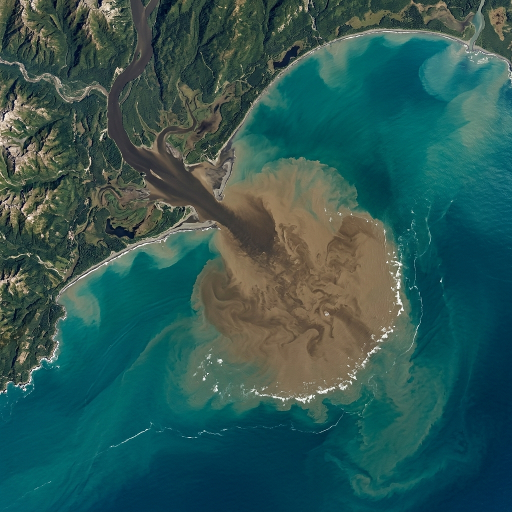

1. The Social Impact
The immediate physical danger of a flood is clear. Fast-moving water is deceptive and lethal—just 15 cm of flow can knock over an adult, and 30 cm can float a vehicle. Across the 2011 and 2022 Queensland events, 46 lives were lost, primarily from vehicles attempting to cross flooded roadways or people caught in sudden overland flow.
Yet the most profound social cost occurs after the water recedes: the mental health crisis. Evidence from the Australian Institute of Health and Welfare (AIHW) and the Black Dog Institute shows that flood-affected residents are significantly more likely to report poor health, anxiety, and post-traumatic stress disorder (PTSD). Multiple evacuations and compounding disasters steadily erode psychological resilience.
Inequality in Recovery
Floods do not discriminate in their destruction, but recovery certainly does. Lower-income households, renters, the elderly, and the uninsured are disproportionately affected. Because housing on floodplains is often cheaper, vulnerable groups are structurally over-represented in high-risk zones. For these residents, recovery is not a matter of months, but years.[1]
2. The Environmental Paradox
It is a common misconception that flooding is entirely bad for the environment. Flooding is, in fact, a crucial natural process. The inland floodplains of Queensland depend on periodic inundation to trigger fish breeding, replenish wetland habitats, and distribute sediment.
However, in altered urban river systems, floods become catastrophic pollution events. Agricultural and urban catchments carry fertilizers, pesticides, heavy metals, and raw sewage directly into waterways. The sheer volume of fluvial geomorphology at work in an extreme flood rewrites the landscape entirely.

3. The Economic Toll
Natural disasters represent a massive, simultaneous shock to capital stock. Bridges are destroyed, schools are inundated, and small businesses lose both their inventory and their customer base.
In 2011, the World Bank estimated the total economic impact on Queensland was a staggering US$15.9 billion. The Insurance Council of Australia (ICA) noted that the 2022 SEQ floods eventually generated A$6.4 billion in insured losses alone across more than 300,000 claims. Yet even these numbers fail to capture the uninsured losses, which the 2022 emergency review estimated at over A$630 million for residential property alone.[2]
Macroeconomic shocks at this scale ripple through the entire country. The Australian Treasury estimated that the 2010–11 floods stripped up to 0.5 percentage points off the national GDP. Ultimately, a flood is a test of a society's endurance—one that costs billions of dollars and generations of trauma to pass.